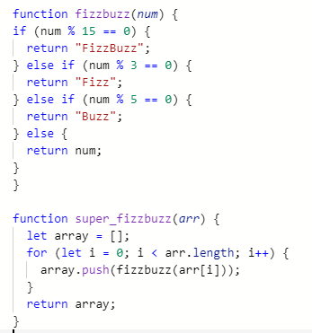
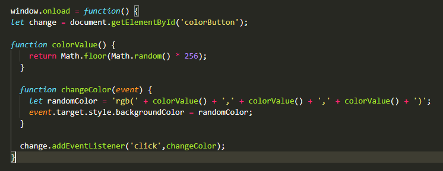

Problem solving
What I did when things felt stuck.
Problem solving techniques:
- Pseudocode
- Trying something
- Rubber ducky method
- Reading error messages
- Console.logging
- Googling
- Asking your peers for help
- Asking coaches for help
- Improving your process with reflection
My confidence in and utilisation of these practices vary, and it is a continued exploration. I find myself using techniques 2, 4, and 6 the most, as I tend to try solving my problems alone before reaching out. This can mean I spend far longer on a problem than I need to, and I will practice seeking outside opinions earlier.
Techniques 1 and 4 I am the least familiar with, and aim to practise, as I can see the value much more when I move on to creating longer or more complex code. The last solution, reflection, I have found useful as a means of making sure I understand what I have done, especially when I have recieved help or used code from an online source.
The following blog post is itself an experiment in problem solving.
Since starting this blog I have enjoyed writing blog posts, but have definitely noticed that it takes me much longer than I feel it should. I talked with my Dev Academy facilitator about this and she suggested I try using text to speech technology, to see if that would streamline my process.
Here we go.
Okay, so this is me trying out Otter.ai, and I'm going to talk about a problem solving technique used during my Sprint 4 Kata exercises. Firstly, I'll talk about a time that I felt blocked by a simple problem, and what I did to solve it.
So I got blocked during the exercise called SuperFizzbuzz. This exercise asked me to transform a given array of numbers, in to an array that would return a mix of numbers, and the words fizz, buzz and fizzbuzz in place of certain multiples.
It was fairly straightforward, I first created a function that would find and replace the multiples for words, I then needed to use that function to inform one that would take in an array of numbers and return an array of both numbers and words. The second function was where I got tripped up. I couldn't seem to link my two functions, and spent a lot of time trying to figure it out.
To solve this I utilised mainly trial and error, lots of googling, reading error messages, and finally I asked my facilitator for help. I knew vaguely what I was doing, I had all the components in my head, I just couldn't manage to find the right order. Because I felt like I knew the outline of my function, I did a lot of trial and error, so much so that I ended up confusing myself and forgetting which things had worked in one way, and which ones were defunct. Next time I would like to improve this step by keeping a log of code that worked in a certain way via comments, and then just cleaning up my code after I've found the working path.
I kept at this problem for too long, to the point I was getting tired and frustrated and information was no longer going in. When I finally asked for help from a facilitator, the problem was solved quickly but it took a while for my brain to accept the new learning and understand what I was being taught. From this I learnt to take more breaks and if possible ask for help sooner, because as soon as the solve was there, I could see how it all fit together and made sense. If no help is available in a future problem, I will aim to give myself breaks and not try slog away at a problem until it is done or until my brain melts.
Here is the outcome of my code:

Next I will tell you about a time I solved a problem in an elegant way.
This problem was one I encountered while writing a technical blog on manipulating the DOM. To create an example for some code I was demonstrating, I wanted to make a button that would change colour randomly when clicked. I wrote the code, utilising a fair few google searches (and seeing some very elegant solutions along the way). I was confident my code would work, all the pieces were there, but it just didn't work. I felt stumped because to me it looked like nothing was wrong.
This time I reached out to my peers on the slack foundations channel. Quickly I recieved a couple of replies, one of which gave the simple suggestion to wrap my entire code in a window.onload {} function. This I did, and it worked immediately. It worked because the element wasn't showing up in the document object model, and thus couldn't be recognised. I learnt that if the place I import the Javascript file in my HTML comes before the HTML I'm trying to target, it'll cause problems. So telling my Javascript file to load the element I want when the window loads, means it doesn't need to be in the exact right place.
Even though this wasn't my solve, the simplicity of it made me think of it as an elegant solution. I found a lot of value in reaching out to the foundations platform, because the answers I recieved led me to enquire into different things, and I was able to access a pool of knowledge in real time, in relation to my specific problem.
Here is the final outcome:

Conclusion on the writing process.
Initially I felt really uncomfortable recording my ramblings in a public space, but it got easier as I talked on. I found that writing I take more breaks to ensure I actually know what I'm trying to convey, and that my words are often more eloquent than my speech. I found that the technology wasn't actually that accurate at picking up what I was saying, and so I spent far longer trying to edit and to understand what I had even been talking about. I ended up ignoring the second of my text to speech log, as it was harder to decipher myself than it was to just write out my thoughts. In the end, this post still took me double the time I wanted it to.In the future I will use this technology as a means of making a draft or, in a similar way to the rubber ducky method, as a means of getting my own thoughts in order through speaking them. I will continue to refine my process and experiment with my problem solving methods.